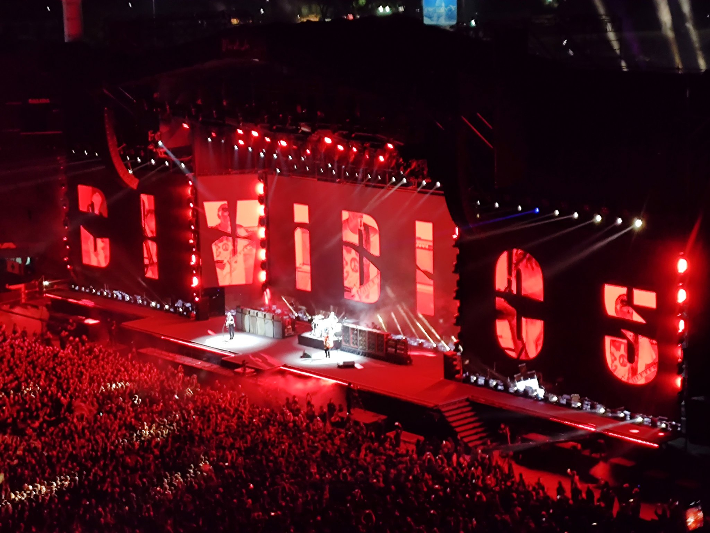

Arrancaron en pubs chicos y locales míticos como Cemento o el Parakultural. Eran shows de mucha transpiración, volumen al límite y la urgencia de heredar el espíritu de Sumo en espacios reducidos.
Con el éxito de La era de la boludez, se adueñaron del "Templo del Rock". Sus presentaciones en el Estadio Obras Sanitarias se volvieron rituales donde el trío demostró que podía sonar más fuerte y ajustado que cualquier banda de diez integrantes.
Pasaron por Vélez Sarsfield (un hito de convocatoria) y son habitués del Luna Park, donde suelen dar conciertos maratónicos. Sus shows se caracterizan por zapadas interminables donde Mollo suele tocar la guitarra con lo que tenga a mano (zapatillas, anteojos) y Arnedo da cátedra de groove.
